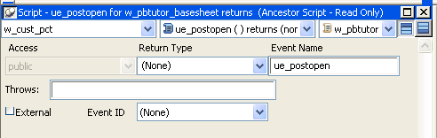

In PowerBuilder, you can define both mapped and unmapped user events for windows, user objects, controls, menus, and the Application object.
When you add a new event, a Prototype window displays above the script area in the Script view. Most of the fields in the Prototype window are the same as when you define a user-defined function. They are in the same order as the event's signature: access level, return type, and name; then for each parameter, how it is passed, its datatype, and its name; and finally, the THROWS clause. For information about filling in these fields, see "Defining user-defined functions ".
The access level for events is always public.

The Prototype window for user events has an additional field that you use if you want to map the user event to an event ID.
 External check box When you select the External check box, PowerBuilder sets
the IsExternalEvent property of the ScriptDefinition object associated
with the event to true. This has no effect on
your application in this release. The feature may be used in a future
release.
External check box When you select the External check box, PowerBuilder sets
the IsExternalEvent property of the ScriptDefinition object associated
with the event to true. This has no effect on
your application in this release. The feature may be used in a future
release.
When a system message occurs, PowerBuilder triggers any user event that has been mapped to the message and passes the appropriate values to the event script as arguments. When you define a user event and map it to an event ID, you must use the return value and arguments that are associated with the event ID.
Unmapped user events are associated with a PowerBuilder activity and do not have an event ID. When you define an unmapped user event, you specify the arguments and return datatype; only your application scripts can trigger the user event. For example, if you create an event called ue_update that updates a database, you might trigger or post the event in the Clicked event of an Update command button.
 To define a mapped user event:
To define a mapped user event:
Open the object for which you want to define a user event.
If you want to define a user event for a control on a window or visual user object, double-click the control to select it.
Select Insert>Event from the menu bar, or, in the Event List view, select Add from the pop-up menu.
The Prototype window opens in the Script view. If you display the Script view's title bar, you see (Untitled) because you have not named the event yet. If there is no open Script view, a new view opens.
Name the event and tab to the next field.
Event names can have up to 40 characters. For valid characters, see the PowerScript Reference .
To recognize user events easily, consider prefacing the name with an easily recognizable prefix such as ue_.
When you tab to the next field, the user event is added to the Event List view. It is saved as part of the object whenever you save the object.
Select an ID from the drop-down list box at the bottom of the Prototype window.
 To define an unmapped user event:
To define an unmapped user event:
Open the object for which you want to define a user event.
If you want to define a user event for a control on a window or visual user object, double-click the control to select it.
Select Insert>Event from the menu bar, or, in the Event List view, select Add from the pop-up menu.
The Prototype window opens in the Script view. If you display the Script view's title bar, you see (Untitled) because you have not named the event yet. If there is no open Script view, a new view opens.
Select a return type and tab to the next field.
Defining return types for events is similar to defining them for functions. See "Defining a return type".
 When you can specify return type and arguments If you map the user event to an event ID, you cannot change
its return type or specify arguments.
When you can specify return type and arguments If you map the user event to an event ID, you cannot change
its return type or specify arguments.
Name the event and tab to the next field.
Event names can have up to 40 characters. For valid characters, see the PowerScript Reference .
To recognize user events easily, consider prefacing the name with an easily recognizable prefix such as ue_.
When you tab to the next field, the user event is added to the Event List view. It is saved as part of the object whenever you save the object.
If the event will take arguments, define arguments for the event.
Defining arguments for events is similar to defining them for functions. See "Defining arguments" and "Changing the arguments".
Optionally enter the name of exceptions that can be thrown by the event.
 To open a user event for editing:
To open a user event for editing:
In the Event List view, double-click the event's name.
 To delete a user event:
To delete a user event:
In the Event List view, select the user event's name and select Delete from the Edit menu or the pop-up menu.